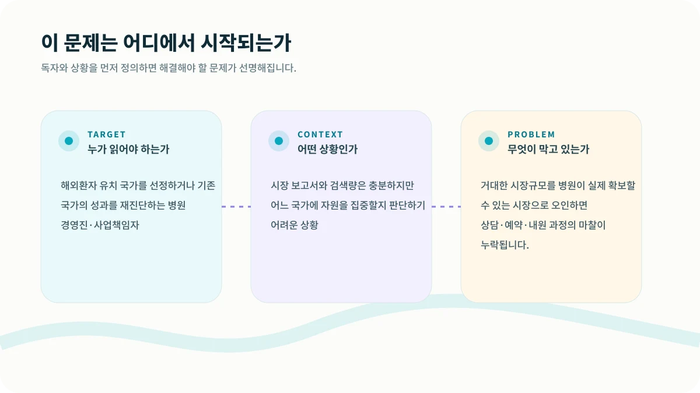
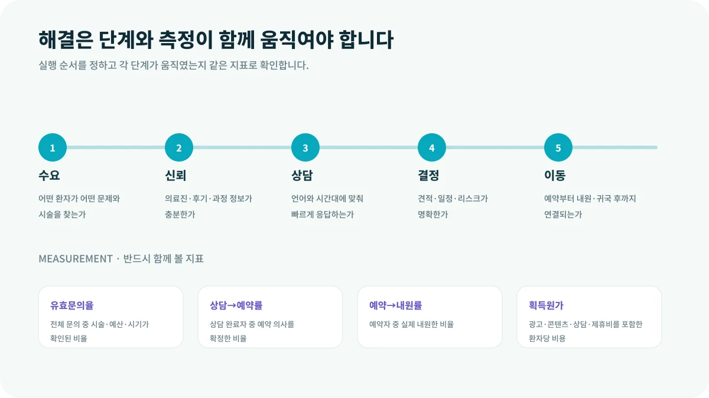

해외 진출 회의에서 가장 먼저 등장하는 숫자는 대개 ‘시장규모’입니다. 숫자가 크면 기회도 커 보입니다. 하지만 병원 입장에서 더 중요한 질문은 따로 있습니다. 그 시장에 있는 환자가 실제로 우리 병원을 발견하고, 상담하고, 비행기를 타고 올 수 있는가입니다.
이 글은 해외환자 유치 국가를 선정하거나 기존 국가의 성과를 재진단하는 병원 경영진·사업책임자에게 특히 필요합니다. 지금처럼 시장 보고서와 검색량은 충분하지만 어느 국가에 자원을 집중할지 판단하기 어려운 상황이라면, 먼저 숫자를 늘리기보다 문제의 구조를 다시 볼 필요가 있습니다.

CORE INSIGHT핵심은 관점을 바꾸는 것입니다
예를 들어 검색 수요가 큰 국가에서 문의 100건이 발생했다고 가정해 보겠습니다. 현지어 상담이 늦고, 예상 비용과 체류 일정이 불명확하며, 예약금 결제가 복잡하다면 문의량은 많아도 내원 환자는 거의 남지 않습니다. 반대로 시장은 작아도 직항 노선, 명확한 특화 시술, 빠른 상담과 방문 지원이 연결되면 훨씬 안정적인 매출을 만들 수 있습니다.
WHY IT HAPPENS왜 이런 일이 반복될까요?
1. 시장규모와 획득가능시장은 다릅니다
시장 보고서의 총액은 산업의 크기를 보여주지만, 병원이 실제 접근할 수 있는 환자군·시술·지역·채널의 크기를 말해주지는 않습니다.
2. 환자 이동에는 마찰이 누적됩니다
정보 신뢰, 언어, 가격 이해, 일정, 항공, 결제, 동반자, 사후관리 중 하나만 막혀도 상담은 내원으로 이어지지 않습니다.
3. 채널보다 여정이 먼저입니다
광고 효율이 좋아도 상담 응답과 예약 보증금, 방문 안내가 끊기면 환자 획득 구조는 완성되지 않습니다.
HOW TO SOLVE현장에서는 이렇게 풀어야 합니다
해결은 한 번의 캠페인이나 담당자의 노력만으로 완성되지 않습니다. 다음 다섯 단계를 하나의 흐름으로 연결하고, 단계가 바뀔 때마다 기록을 남겨야 합니다.

MEASUREMENT무엇을 측정해야 할까요?
결과만 보면 문제가 발생한 위치를 알 수 없습니다. 아래 지표를 같은 기간과 같은 정의로 추적하면 어느 단계가 실제 병목인지 확인할 수 있습니다.
| 유효문의율 | 전체 문의 중 시술·예산·시기가 확인된 비율 |
|---|---|
| 상담→예약률 | 상담 완료자 중 예약 의사를 확정한 비율 |
| 예약→내원률 | 예약자 중 실제 내원한 비율 |
| 획득원가 | 광고·콘텐츠·상담·제휴비를 포함한 환자당 비용 |
START THIS WEEK이번 주에 바로 확인할 네 가지
시장을 고를 때는 ‘얼마나 큰가’보다 ‘환자가 어디에서 멈추는가’를 먼저 그려보십시오. 병원의 다음 성장 기회는 시장 보고서의 총액보다 환자 여정의 끊어진 지점에서 발견되는 경우가 많습니다.
GUARDRAIL실행 전에 반드시 확인할 점
본 콘텐츠는 병원 사업·운영을 위한 일반 정보이며, 의료·법률·세무 자문을 대체하지 않습니다. 실제 적용 시 관련 전문가와 최신 법령을 확인해야 합니다.
현재 병원의 병목을 함께 찾아보세요.
시장·마케팅·상담·CRM·운영 중 어디에서 성장이 멈추는지 구조적으로 진단합니다.